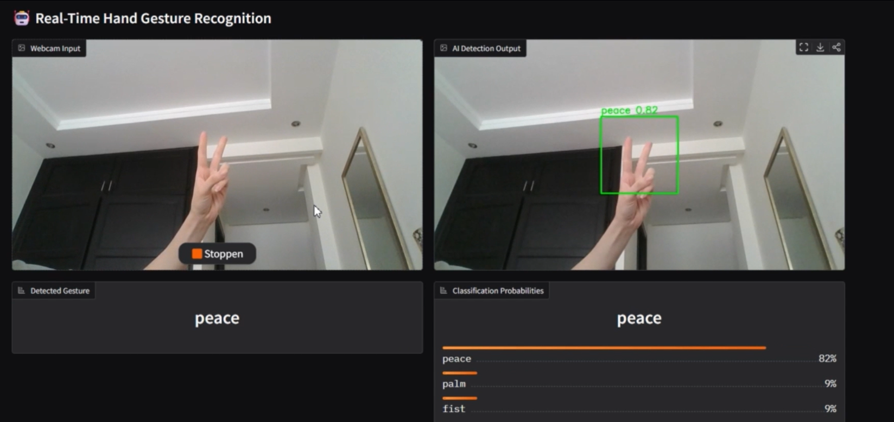
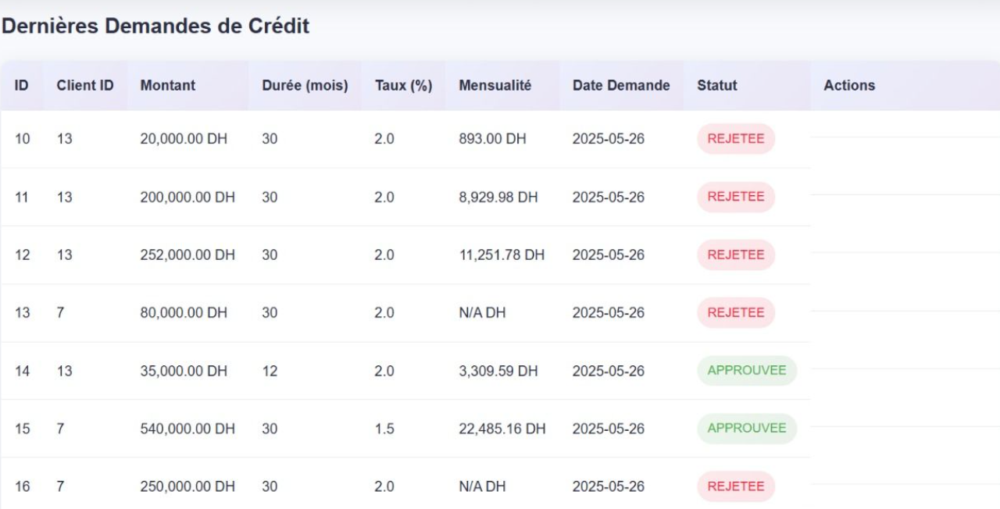
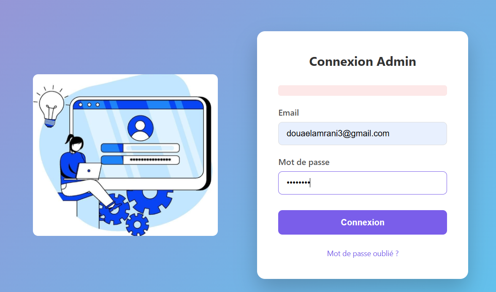

AI & Automation
Workflows n8n, IA générative, agents IA, intégration de services externes et automatisation de processus.
Expérience récenteJe suis Lamrani Douae, ingénieure en Informatique & Réseaux, orientée IA et automatisation intelligente. J'aime transformer un besoin réel en solution exploitable, de la donnée et des API jusqu'au modèle, au workflow et au déploiement. Je développe également mon expertise en Computer Vision et IA fiable.

Diplômée en Informatique & Réseaux de l'EMSI Rabat, j'ai travaillé sur l'automatisation de workflows, l'intégration d'API, le traitement de données et plusieurs architectures applicatives. Mes projets m'ont également amenée vers l'IA générative, les agents IA et la Computer Vision.
Mon point fort est de relier plusieurs briques d'un système : données, logique métier, API, automatisation et interface. Je souhaite poursuivre cette trajectoire vers des systèmes d'IA plus robustes et déployables, sans présenter comme acquises des compétences que je suis encore en train d'approfondir.
Workflows n8n, IA générative, agents IA, intégration de services externes et automatisation de processus.
Expérience récenteProjet de reconnaissance de gestes de la main en temps réel avec Python et chaîne d'inférence visuelle.
Projet réaliséSpring Boot, microservices, Django, REST, bases de données et conception d'applications complètes.
Base solideIntérêt actuel pour la robustesse, l'incertitude, la détection OOD et l'optimisation de modèles sous contraintes.
Axe d'approfondissementJe m'intéresse à la chaîne complète d'un système intelligent : qualité des données, inférence, intégration, fiabilité et contraintes de déploiement. Cette approche reste générale, tout en étant directement pertinente pour des sujets exigeants comme la Computer Vision ou l'Edge AI.
Mon objectif est de concevoir des solutions où le modèle n'est pas isolé : il s'intègre dans un pipeline clair, mesurable et maintenable, avec des mécanismes de contrôle lorsque les données ou les conditions d'utilisation changent.
Collecter, nettoyer, structurer et contrôler la qualité des données avant toute décision automatisée.
Choisir une solution adaptée au besoin : modèle IA, règles métier, agent ou combinaison de plusieurs composants.
Mesurer les erreurs, identifier les cas difficiles et prévoir un comportement sûr lorsque la confiance est insuffisante.
Connecter le système aux APIs, bases de données et workflows nécessaires à son utilisation réelle.
Prendre en compte latence, ressources, traçabilité et contraintes de l'environnement cible.
Les technologies ci-dessous correspondent à mon CV et à mes projets. Les sujets liés à l'IA fiable et à l'edge sont clairement présentés comme des axes d'approfondissement.
J'ai sélectionné ici les projets qui représentent le mieux mon profil actuel : automatisation IA, Computer Vision, architectures distribuées et data.
Conception d'un workflow intelligent pour la collecte, le nettoyage et la structuration des leads, avec personnalisation automatique des e-mails et création de contenus.

AI • Computer VisionSystème d'IA en temps réel pour la reconnaissance des gestes de la main, développé comme projet de Computer Vision.
Plateforme intelligente intégrant un agent IA conversationnel avec une architecture basée sur des microservices et des APIs REST.

BackendApplication web de gestion bancaire avec rôles administrateur et client et persistance structurée des données.
 Data
Data
Déploiement d'un entrepôt de données et d'un tableau de bord décisionnel pour une société de construction.

Web platformPlateforme de gestion des candidatures étudiantes avec formulaires dynamiques, validation et persistance PostgreSQL.
Mes expériences couvrent aujourd'hui l'automatisation IA, l'intégration d'API, le traitement de données et le développement d'applications, avec un même objectif : transformer un besoin réel en système exploitable.
Conception de workflows intelligents pour automatiser des processus métier et structurer des données exploitables.
Conception et développement d'une plateforme de pré-inscription en ligne pour la gestion des candidatures étudiantes.
Conception d'un site web événementiel pour présenter et gérer les informations liées à un événement institutionnel.
Formation en développement logiciel, systèmes, réseaux, bases de données, architectures applicatives et projets informatiques.
Option Sciences Physiques et Chimie.